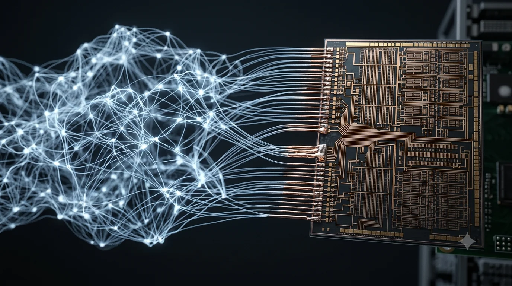

For sixty years, mainstream computing has run in one direction: the hardware is fixed, and the software adapts to it. On August 6, AMD paid to reverse the arrow. It signed a definitive agreement to acquire Taalas, a Toronto startup that etches a model’s weights directly into the chip’s metal, a silicon that can run only the model it was manufactured with.[1] Taalas co-founder Ljubisa Bajic, in AMD’s announcement: “We founded Taalas to rethink AI inference from the ground up by building the hardware around the model.”[1]
In March, I wrote that the one-chip-does-everything era of AI inference ended when AWS, Nvidia, and Huawei converged on the same split: prefill on compute-bound silicon, decode on memory-bound silicon.[2][3] AMD held the middle ground: disaggregation in scheduling software, not in silicon.[2] Four and a half months later, AMD closed that ground, not with a decode chip, but with the rung below. Specialization is descending: first, the workload, when training chips split from inference chips; then the phase; now the model, and the GPU duopoly is paying for every rung of the descent.
What AMD actually bought
Taalas showed working silicon this February: HC1, a 6-nanometer TSMC chip with 53 billion transistors, Meta’s Llama 3.1 8B etched into a mask-ROM fabric, and the KV cache — its working memory — in on-die SRAM.[4] No high-bandwidth memory (HBM), no advanced packaging, no liquid cooling. The company claims about 17,000 tokens per second per user, a tenth of the power of GPU serving, and a twentieth of the datacenter build cost. Vendor numbers, measured on a small model at 3-bit quantization; per-user speed is not aggregate throughput.[5]
The prefill/decode split was a workaround for chips that must serve any model. Etch one model into the die, and the workaround dissolves: weights sit next to compute, the memory wall that made decode expensive is gone, and one chip serves both phases again, for exactly one tenant.[2]
When the weights change, there is nothing to reprogram. You reprint: a new checkpoint of the etched architecture touches two metal layers of the roughly 100 mask layers that build the chip, a revision Taalas says TSMC turns in about 2 months, against 6 for a full design.[6] A new architecture is a different job: the fabric is shaped to the model’s dimensions, and Taalas’s own roadmap says as much. Its next model class arrives on new silicon, not as a revision of HC1.[6] The first product took 24 people, $30 million of the roughly $219 million raised, and a founding team out of Tenstorrent, AMD, and Nvidia.[7]
The admission, priced twice
On December 24, Nvidia paid a reported $20 billion — its largest transaction on record, unconfirmed in any filing — for a non-exclusive license to Groq’s inference IP and roughly 90 percent of its staff. “We are not acquiring Groq as a company,” Jensen Huang told employees, oddly.[8] Twelve weeks later, the Groq 3 LPX stood on the GTC stage: an SRAM-based decode rack fused into the Vera Rubin platform, with Foxconn reportedly pulling production forward to this summer.[9]
AMD’s pattern is the same, run twice. In June 2025, it hired away the entire team behind Untether AI, a Toronto inference-chip company whose products were promptly discontinued.[10] Taalas is AMD’s second Toronto inference-silicon absorption in fourteen months, and this time it kept the product: Taalas goes into the Instinct roadmap and the Helios racks now ramping with Anthropic, Meta, Microsoft, OpenAI, and Oracle.[1][11] Lisa Su calls herself “a big believer that there’s no one-size-fits-all as it comes to chips”; her AI chief, Vamsi Boppana, frames the acquisition as “the right compute solutions for every AI workload.”[12][1] Both lines are unremarkable until you remember what these companies sell. The two firms whose franchises are general-purpose GPUs are the ones paying — one, a reported twenty billion; the other, undisclosed — for silicon that is anything but.
AMD would call this a portfolio, not a pivot, and the undisclosed terms suggest the hedge was probably cheap. An acquisition proves direction only when it ships. Nvidia’s shipped. AMD’s now has to.
When the model and the machine write down together
Model-etched silicon matters for accounting reasons before engineering ones. In April, I wrote that the industry’s mismatch is temporal: frontier models live three to twelve months while the hardware they run on depreciates over five or six years. OpenAI shipped five versions of GPT-5 in seven months, none of which lasted four months as the flagship.[13] The gap between those schedules is where the balance-sheet fiction lives. Etching closes it in two tiers that mirror the model pipeline itself. Manufactured chips carry one checkpoint: supersede it, and that inventory is done, a two-month reprint producing the next edition. The design — the shape cast in silicon — depreciates with the architecture; adapters in SRAM absorb the fine-tune churn in between.[4][6] The chip is not a platform. It is a print run, and the press outlives the edition.
A print run is only rational if what you are printing holds still, and the thing that must hold still is the architecture. Checkpoints are what reprints are for. Nobody etches the frontier: that tier changes every six weeks and stays on programmable silicon. The bet is the serving tier: the Llama-class workhorses and distilled variants. The demo is the evidence: the architecture Taalas etched in February 2026 is a shape Meta shipped in July 2024, and DeepSeek was still pouring new reasoning checkpoints into it six months on.[4] AMD is pricing the proposition that the volume tier of the model market has commoditized into stable shapes, and that the inference price war will be won a twentieth of a build cost at a time. The most consequential claim in this acquisition is about models, not chips.
So the strategic question underneath the deal: whose shapes get etched? An etched fabric in AMD’s roadmap is a standard with hardware gravity. Every checkpoint that wants the economics must ship in that shape, and the compatibility war moves down a layer. The co-design precedent is already on the record: Amazon says Anthropic works with Annapurna Labs to shape next-generation Trainium, Broadcom builds Anthropic’s custom accelerators, and Anthropic already runs on Helios.[14][11] Watch for a frontier lab handing its serving workhorse to AMD’s mask shop, the model roadmap becoming a silicon roadmap.
What would prove this wrong
Three tests, all observable. If all three fail, this was a talent acquisition with a good press release, Untether with better branding.
Taalas silicon appears in a shipping Helios configuration, or it never does.
A hardwired, model-specific chip reaches production at a major platform by the end of 2027, or none does.
Serving-tier architectures hold still long enough to etch, or shape turnover stays too fast, and the category dies.
The market-structure consequence is already on the scoreboard. Groq’s assets are inside Nvidia. Untether’s team and Taalas are inside AMD. Cerebras took the other exit, a May IPO at $185 a share.[15] Anyone pricing an independent inference-silicon position should assume the modal exit is absorption, not platform status. The category built to disrupt GPU vendors is consolidating into them, and margins migrate to whoever assembles the system.[2]
Strip both deals to the sentence they share: the companies whose franchise is general-purpose silicon have concluded that the most valuable workload in computing no longer wants it. What they are unwinding is older than either company: the separation of software from hardware — the line that lets you sell one without the other, update one without retooling the other, write one down while the other keeps depreciating. The software industry was built on that line. Etching erases it. The model is the machine now.
Notes
[1] AMD press release,“AMD Acquires Taalas to Advance Compute Solutions for Rapidly Growing AI Inference Market,”August 6, 2026. Definitive agreement; financial terms not disclosed; closing expected Q4 2026 subject to regulatory approvals. Vamsi Boppana (SVP, AI Group): “AMD is building a full-stack AI platform that gives customers the flexibility to deploy the right compute solutions for every AI workload.” Ljubisa Bajic: “We founded Taalas to rethink AI inference from the ground up by building the hardware around the model.” The release names integration targets: the Instinct accelerator roadmap, Helios rack-scale systems, EPYC CPUs, and ROCm software.
[2] Julien Simon,“AWS Built Its Own AI Chip. Now It Needs Someone Else’s,”The AI Realist, March 15, 2026. Introduces the Reasoning Tax and the Integration Premium (”in any disaggregating hardware stack, margin migrates from component manufacturers to the integration layer”); documents the three-ecosystem convergence and AMD’s middle-ground position: “The disaggregation is in scheduling, not in silicon.”
[3] Julien Simon,“Acquired, Absorbed, Disaggregated,”The AI Realist, March 26, 2026. The convergence:AWS-Cerebras announced March 13;Nvidia Dynamo entered production March 16; Groq 3 LPX announced at GTC March 17. Huawei’s phase-split Ascend 950PR/950DT pair, announced September 2025, ships across 2026.
[4] Taalas HC1 unveiled February 2026. Specifications perheise online(February 2026) andData Center Dynamics: TSMC 6nm, approximately 53 billion transistors on an 815 mm² die; model weights in a mask-ROM recall fabric using a proprietary 3-bit data format with 6-bit parameters; KV cache and fine-tuning adapters in an SRAM fabric; no HBM, no advanced packaging, no liquid cooling. The base model is fixed at manufacture. Adapter-style fine-tunes (LoRA) load into the SRAM fabric at runtime, and the context window is configurable, perCNX Software; a full-parameter fine-tune — or a LoRA merged into the base weights — is a new checkpoint, which requires a mask reprint, not a load. Llama 3.1 was released by Meta in July 2024; the same 8B architecture carried DeepSeek’sR1-Distill-Llama-8Bin January 2025 — checkpoints changed, the shape persisted. Meta’s own frontier direction has since turned proprietary with Muse Spark, its first release after the Superintelligence Labs reorganization, though Meta says current Llama models remain open source, perVentureBeat. The shape’s persistence in the serving tier does not depend on Meta’s frontier roadmap: the installed base and third-party checkpoints sustain it — if anything, a sponsor stepping back makes an etched shape more like a public instruction set than a vendor product.
[5] Vendor-published figures: approximately 17,000 tokens per second per user on Llama 3.1 8B, roughly one-tenth the power and one-twentieth the datacenter build cost of conventional GPU serving, per Taalas materials as reported byheiseandThe Register. heise notes early independent tests reaching close to 16,000 tokens/second. Per-user token rate is a latency-side metric and does not translate directly to aggregate throughput per chip; the demonstration model is small (8B parameters) and aggressively quantized. The contrast with Cerebras is density and cost: the WSE-3 reaches on-die weights with 44 GB of SRAM across a full wafer; Taalas reaches them with mask ROM on a single 815 mm² die — fixed function traded for commodity size.
[6] Company-described revision process, as reported byheise,Unite.AI, andThe Register: weights occupy two metal layers of the roughly 100 mask layers used to build the chip, with TSMC turnaround of approximately two months for a two-layer revision versus approximately six for a full design. All three descriptions derive from Taalas, and none specifies whether the two-layer path covers anything beyond new weights for the etched architecture. A cross-architecture port — different dimensions, vocabulary, or attention configuration; Llama to Qwen, or 8B to 70B — changes the compute fabric itself. The Register describes re-spins for new models as significantly cheaper than starting from scratch, and Taalas’s roadmap points to new silicon for new model classes (a mid-sized reasoning model in spring, the HC2 platform — with standard 4-bit floating-point formats — by year end) rather than HC1 revisions, perheiseandCNX Software.
[7]Data Center Dynamics, February 2026: founded August 2023 by Ljubisa Bajic (previously an architect at AMD and Nvidia; co-founder of Tenstorrent, where he swapped the CEO role with Jim Keller in October 2022 and departed in March 2023), Drago Ignjatovic, and Lejla Bajic; $169 million round announced February 2026, approximately $219 million raised in total. Investors include Quiet Capital, Fidelity, and Pierre Lamond, perUnite.AI. Team of 24 and $30 million spent on the first product, perheise.
[8]CNBC, December 24, 2025. Structured as a non-exclusive IP licensing agreement plus the hiring of approximately 90% of Groq staff; approximately $20 billion per investor sources, not confirmed by Nvidia in filings. Jensen Huang internal email obtained by CNBC: “We are not acquiring Groq as a company.” Jonathan Ross subsequently joined Nvidia as chief software architect, perForbes(March 18, 2026).
[9] Groq 3 LPX announced at GTC 2026, March 17, 2026 (see [3]). Chip produced on Samsung’s 4nm process and integrated into the Vera Rubin platform, perTom’s Hardware. Foxconn reportedly accelerating LPX rack production ahead of schedule, perWccftech(July 2026); production timing is press-reported, not confirmed by Nvidia.
[10]TechCrunch, June 6, 2025: AMD hired the engineering team behind Untether AI.Tom’s Hardware: Untether ceased product support. Untether AI was headquartered in Toronto and built at-memory inference accelerators.
[11] AMD,“AMD Reports Second Quarter 2026 Financial Results,”August 4, 2026. Revenue $11.5 billion, up 50% year over year; Data Center segment $6.7 billion, up 107%. Helios rack-scale systems described as beginning to ramp, with deployments named for Anthropic, Meta, Microsoft, OpenAI, and Oracle; MI400-series GPUs (MI455X, MI430X) recently launched.
[12] Lisa Su, remarks at AMD’sAdvancing AI 2026launch event (July 20, 2026, where Helios and the MI400 series debuted), as reported byStocktwits/Yahoo Finance(August 6, 2026): “a big believer that there’s no one-size-fits-all as it comes to chips,” in the context of GPUs remaining dominant for flexibility across new models. Reported speech; a primary transcript was not located, and the wording should be treated accordingly.
[13] Julien Simon,“Train, Deploy, Write Down,”The AI Realist, April 7, 2026. GPT-5 cadence per OpenAI release notes: five major versions between August 2025 and March 2026, none surviving longer than four months as the current flagship; hardware depreciation schedules of five to six years per hyperscaler filings.
[14] Amazon,“Amazon and Anthropic deepen their collaboration,”April 20, 2026: “Anthropic works closely with Annapurna Labs on developing and optimizing future Trainium chips, providing direct feedback from Claude training workloads to shape next-generation chip design.” Broadcom’s fourth custom-accelerator customer was revealed as Anthropic at its Q4 FY2025 earnings, perCNBC, December 11, 2025. Anthropic’s Helios deployment: see [11].
[15]CNBC, May 13, 2026: Cerebras priced its IPO at $185 per share, above the expected range, raising approximately $5.5 billion; trading on Nasdaq as CBRS from May 14. See also theCerebras pricing release.